USMR Lecture 3
Orbis pictus
Milan Valášek
Before we start
- Any questions about last week’s matters?
Today
- Catch-up: measures of dispersion
- Functions
- Basic data visualisation
- Distributions
- Sampling distribution
- Central Limit Theorem
Catch-up
Dispersion
- Mode, median, and mean tell us about the central point in our data
- They don’t tell us how spread the data are around this point
- That is what measures of dispersion (spread) do
- Range
- Inter-quartile range
- Deviation
- Variance
- Standard deviation
Dispersion: Range
- Distance between smallest and largest value in sample
- Drawback: Extremely sensitive to outliers
# range() gives minimum and maximum
range(data$age)
[1] 23 33
# get the distance
max(data$age) - min(data$age)
[1] 10Dispersion: IQR
- Inter-quartile range - distance between 1st and 3rd quartile
- Drawback: Ignores half of the data
# get quartiles (quantiles with n = 4)
# cut data into lower 25%, 50%, 75%, 100%
(quartiles <- quantile(age, c(.25, .5, .75, 1)))
25% 50% 75% 100%
24.25 25.00 25.75 83.00
# IQR = 3rd - 1st quaritle
# don't worry about the "75%", it's just a leftover label
quartiles[3] - quartiles[1]
75%
1.5
# built-in R function
IQR(data$age)
[1] 1.5- Other quantiles can be used for different inter-quantile ranges
Dispersion: Deviation
- Distance from every single value in the data from some convenient point
- Mean is a convenient point
\(x_i - \bar{x}\) , where\(x_i\) is every single data point
# minus is a vectorised operation in R
data$age - mean(data$age)
[1] -3 -1 7 0 -1 -2Dispersion: Deviation
- There are as many deviations as data points
- To get a single measure of spread, how about we add them all up?
- Problem: More data points = more points to add up
- BIG problem: They always add up to zero
Dispersion: Variance
- How do we get around the BIG problem (deviations adding up to 0)?
- By taking the square of the deviations
- The sum of these is called the Sum of Squares
- We can get around the problem by dividing the sum of squares by N
- This is the variance
Dispersion: Variance
- population variance
\(\sigma^2 = \frac{\sum_{i=1}^N (x_i - \mu)^2}{N}\) - sample variance,
\(s^2 = \frac{\sum_{i=1}^N (x_i - \bar{x})^2}{N - 1}\) - reason for the
\(N - 1\) is quite technical (see Bessel’s correction)
- reason for the
# deviations
(dev <- data$age - mean(data$age))
[1] -3 -1 7 0 -1 -2
# sums of squares
(ss <- sum(dev^2))
[1] 64
# variance
ss / (length(data$age) - 1)
[1] 12.8
# in-built function
var(data$age)
[1] 12.8Dispersion: Standard deviation
- Variance is a good measure of dispersion and is widely used
- One minor inconvenience – measured in squared units
- if age is measured in years,
\(s^2_{age}\) is expressed in years2, whatever those are
- if age is measured in years,
- Taking the square root of variance gives us a measure of spread in the original units
- This is the standard deviation
\(\sigma\) for population\(s\) (or\(SD\) ) for sample
Dispersion: Standard deviation
sqrt(var(data$age))
[1] 3.577709
sd(data$age)
[1] 3.577709- If we measured age in decades,
\(s_{ageD}\) would be proportional to\(s_{age}\)
(ageD <- data$age / 10)
[1] 2.3 2.5 3.3 2.6 2.5 2.4
sd(ageD)
[1] 0.3577709Take-home message
- Relationship between population and sample
- What random sampling with and without replacement is
- Difference between types of variables and levels of measurement
- Central tendency describes the average value
- Dispersion describes how much the values are spread
- There are several measures, each with pros and cons
- variance and standard deviation relate to mean
- SD in cm = 100 × SD in m
Fun in function()
Functions
- Informally, function is a process that takes some input and turns it into a single output
- Individual inputs are called parameters
Play time!
- You just invented the identity function!
- \(f(x) = x\)
Functions
- Informally, function a process that takes some input and turns it into a unique output
- Individual inputs are called parameters
- The process itself is the definition of a function
- \(f(x) = x^2\)
- \(f(2) = 4\)
- \(f(5) = 25\)
- \(f(0) = 0\)
- \(f(1) = 1\)
Functions in the real world
- It’s not “just maths” (nothing ever is)
- Everyday operations can be seen as functions of some arguments
- Who’s taller? Me or Martin?
- Measure my height
- Measure Martin’s height
- Compare the two
- If not equal, return name of taller person
- Else return “both are the same height”
- \(taller(Martin, Milan) = Martin\)
Functions in R
- Functions are ubiquitous in
R(and any other programming language) - Basically the same as mathematical functions but can be much more complex
- Also take arguments, have definitions, and return output
# define f as function of argument x
f <- function(x) {x*x}
# works
f(2)
[1] 4
f(100)
[1] 10000Functions in R
- Every operation is a function –
<-,+,sum(),sd() - If the function was built in
Ryou can see its definition
# see the code inside the sd() function
sd
function (x, na.rm = FALSE)
sqrt(var(if (is.vector(x) || is.factor(x)) x else as.double(x),
na.rm = na.rm))
<bytecode: 0x0000000005d99f50>
<environment: namespace:stats>Functions brake
- Functions are not all-powerful
- They need the right kind and number of arguments
- kitten2 means nothing
- \(taller(Martin)\) doesn’t give enough arguments
- Output of some arguments might not be defined
- Division by zero
# wrong kind of argument
f("Milan")
Error in x * x: non-numeric argument to binary operator
# incorrect number of arguments
sd()
Error in is.vector(x): argument "x" is missing, with no defaultAll sorts
- Functions range from very simple to huge
- They can look intimidating but they all do the same thing:
- Take arguments
- Apply some defined operation to them
- Return output
Visualising functions
- Function parameters and output can be visualised as perpendicular axes and points/lines in space
- Because our world has 4 dimensions (3 spatial + time), visualising functions with more than 3 varying parameters is tricky (even 3 is a bit of a stretch)
Visualising functions
- Let’s start simple –
\(f(x) = x\)

Visualising functions
- Let’s start simple –
\(f(x) = x\)
Visualising functions
- Let’s start simple –
\(f(x) = x\) - Plot x = [1, 5, −10, 15.6, −19]
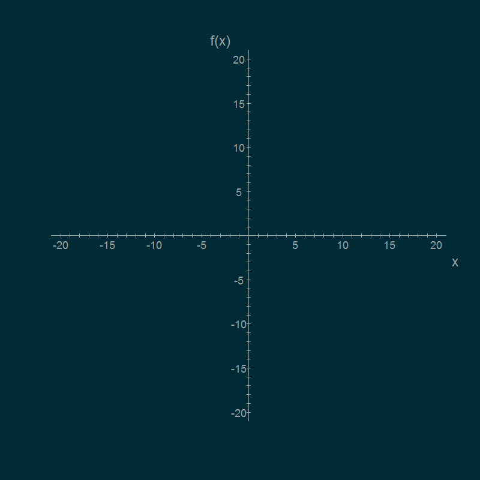
Visualising functions
- Let’s start simple –
\(f(x) = x\) - Plot x = [1, 5, −10, 15.6, −19]
Visualising functions
- Let’s start simple –
\(f(x) = x\) - Plot x = [1, 5, −10, 15.6, −19]
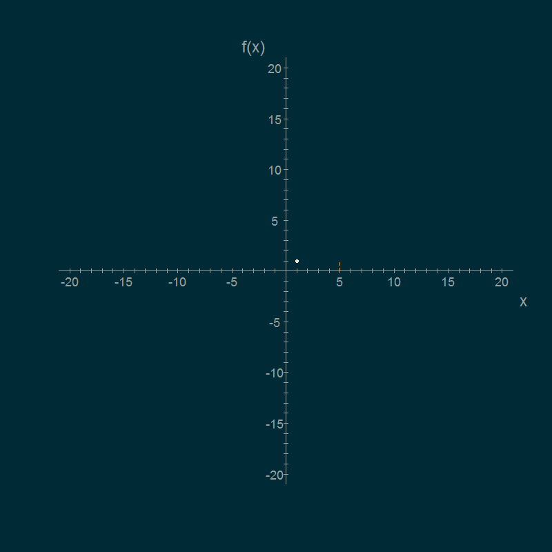
Visualising functions
- Let’s start simple –
\(f(x) = x\) - Plot x = [1, 5, −10, 15.6, −19]

Visualising functions
- Let’s start simple –
\(f(x) = x\) - Plot x = [1, 5, −10, 15.6, −19]
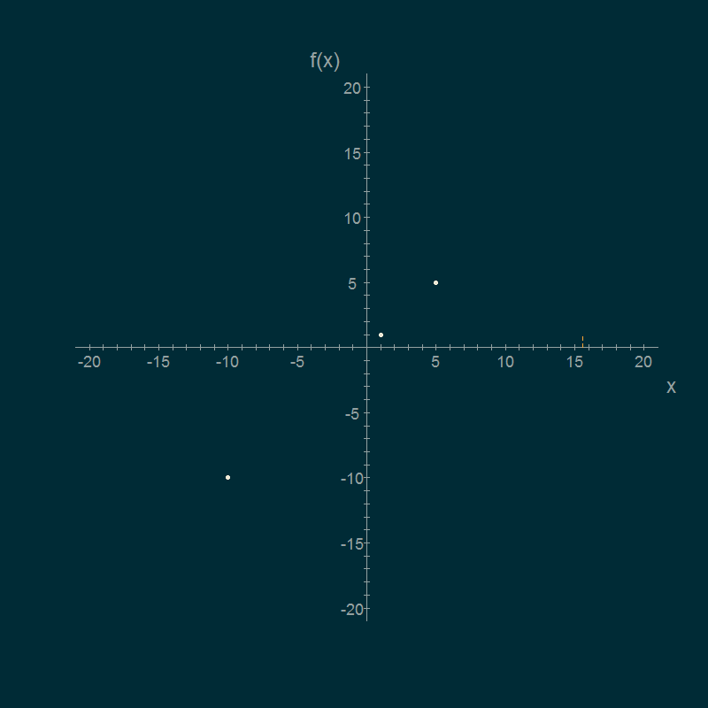
Visualising functions
- Let’s start simple –
\(f(x) = x\) - Plot x = [1, 5, −10, 15.6, −19]
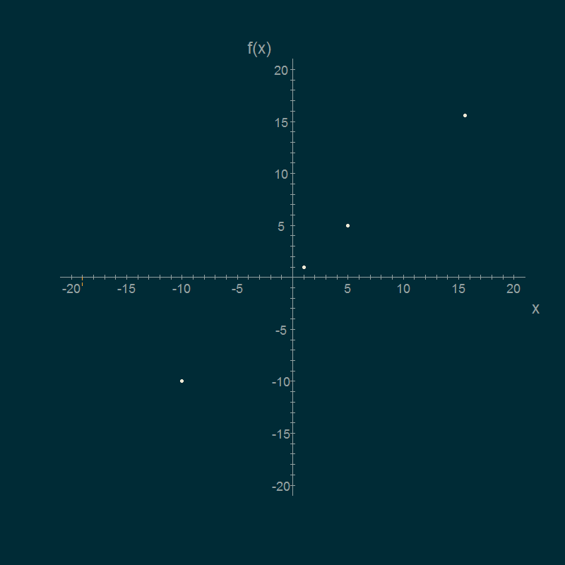
Visualising functions
- Let’s start simple –
\(f(x) = x\) - Plot x = [1, 5, −10, 15.6, −19]
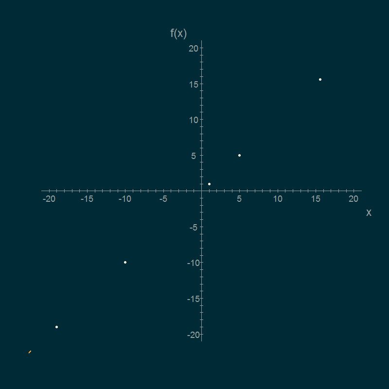
Visualising maths operations
- OK, now for something different:
\[f(x) = x^2\]
Visualising maths operations
- OK, now for something different:
\[f(x) = x^2\]
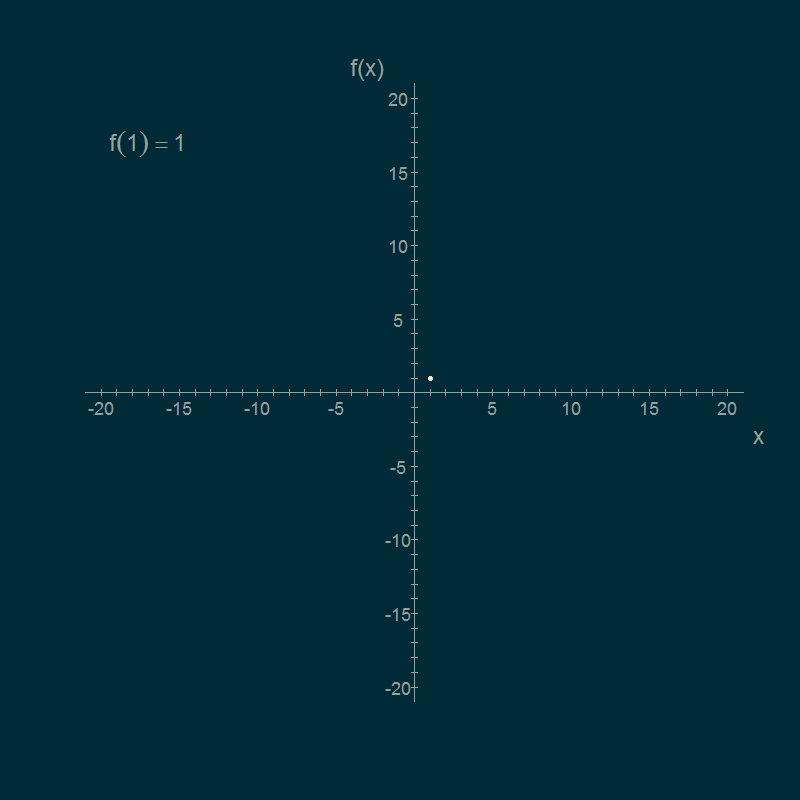
Visualising maths operations
- OK, now for something different:
\[f(x) = (x + 15)^2\]

Visualising maths operations
- OK, now for something different:
\[f(x) = (x + 15)^2\]

Visualising maths operations
- OK, now for something different:
\[f(x) = (x - 5)^2\]

Visualising maths operations
- OK, now for something different:
\[f(x) = (x - 5)^2\]

Visualising maths operations
- OK, now for something different:
\[f(x) = -((x-5)^2)\]

Visualising maths operations
- OK, now for something different:
\[f(x) = -((x-5)^2)\]

Visualising maths operations
- OK, now for something different:
\[f(x) = -((x-5)^2)\times 3\]

Visualising maths operations
- OK, now for something different:
\[f(x) = -((x-5)^2)\times 3\]
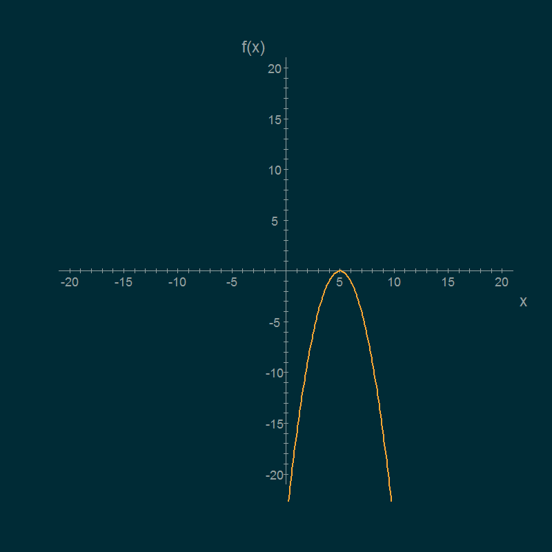
Visualising maths operations
- OK, now for something different:
\[f(x) = -((x-5)^2)/10\]
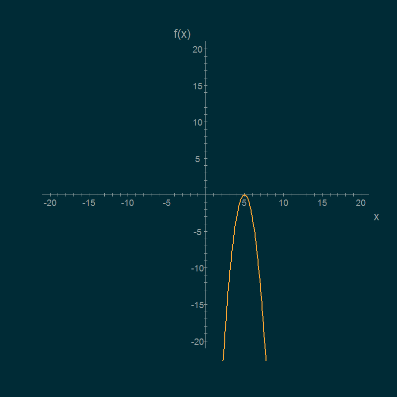
Visualising maths operations
- OK, now for something different:
\[f(x) = -((x-5)^2)/10\]
Visualising maths operations
- OK, now for something different:
\[f(x) = -((x-5)^2)/10 -10\]
Visualising maths operations
- OK, now for something different:
\[f(x) = -((x-5)^2)/10 -10\]

Visualising maths operations
- OK, now for something different:
\[f(x) = -((x-5)^2)/10 + 5\]

Visualising maths operations
- OK, now for something different:
\[f(x) = -((x-5)^2)/10 + 5\]

Visualising maths operations
- OK, now for something different:
\[f(x) = |-((x-5)^2)/10 + 5|\]
Visualising maths operations
- OK, now for something different:
\[f(x) = |-((x-5)^2)/10 + 5|\]
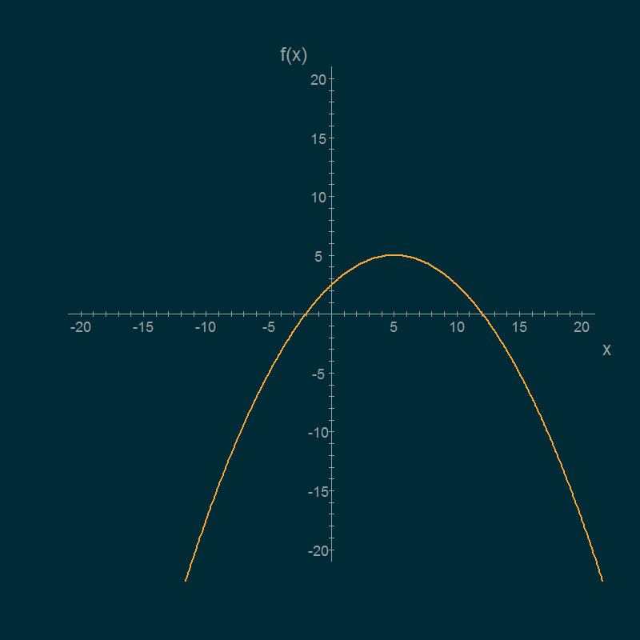
Linear function
- one of the most important functions with respect to statistics
\(b_0\) is the intercept – the value of y for x = 0\(b_1\) is the slope, or gradient of the line – how much does y increase or decrease when x is increased by 1.
Linear function – Intercept

Linear function – Intercept

Linear function – Slope

Linear function – Slope

Linear function
Remember: Every single* straight line is a function of x characterised by the intercept (\(b_0\)) and the slope (\(b_1\))
* Well, except for the vertical line, because that one is not a function of x
Worth a thousand words
Visualising data
- Graphics can help you get a feel for your data before analysis
- Help communicate results of analysis
- Good graphics are both clear and have a high information density
- There are myriad ways to visualise data – picking an appropriate way is crucial
Data
set.seed(1234)
data <- data.frame( # create data set
id = factor(1001:1100), age = round(rnorm(100, 24, 1.5)),
eye_col = factor(sample(c("blue", "brown", "green"),
100, replace = T)),
dpt = factor(sample(c("psy", "cog", "lel"), 100, replace = T)),
degree = ordered(sample(c(3, 1, 1, 1, 2, 2), 100, replace = T),
labels = c("1", "2:1", "2:2")),
mark = round(rnorm(100, 68, 9)))head(data)
id age eye_col dpt degree mark
1 1001 22 brown cog 2:1 72
2 1002 24 brown lel 1 78
3 1003 26 blue cog 2:1 72
4 1004 20 green cog 2:1 74
5 1005 25 brown lel 1 58
6 1006 25 green cog 1 65One categorical variable
- The only thing that can be visualised are the counts/relative proportions of individual levels of categorical variables
- A good way of doing this is the bar chart
- Individual bars represent levels of the variable
- Height of a given bar represent number of observations (or proportion) of a given level
Bar chart
- Basic
plot()will try to guess which type of plot you want based on the data provided
plot(data$dpt, main = "", ylim = c(0, 40),
xlab = "Department", ylab = "Count")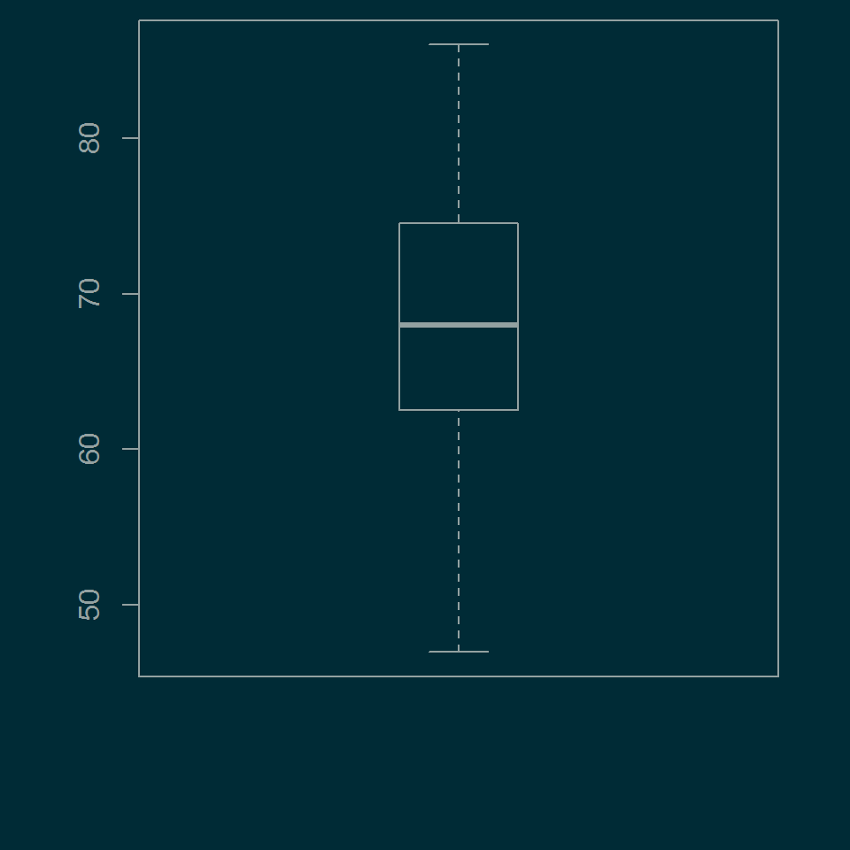
Bar chart
- Same goes for both nominal and ordinal variables
barplot(prop.table(table(data$degree)) * 100, # for percentages
main = "", xlab = "Department", ylab = "%")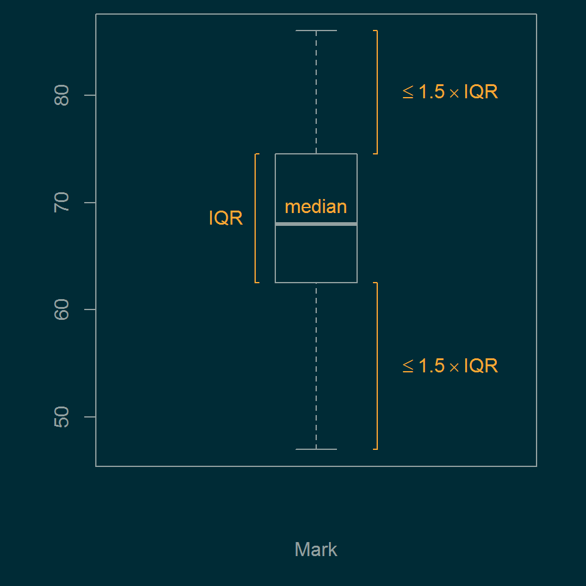
One continuous variable
Histogram
- By default
Rwill try to give you a reasonable number of bins (and thereby the bin width)
hist(data$mark, main = "", xlab = "Mark")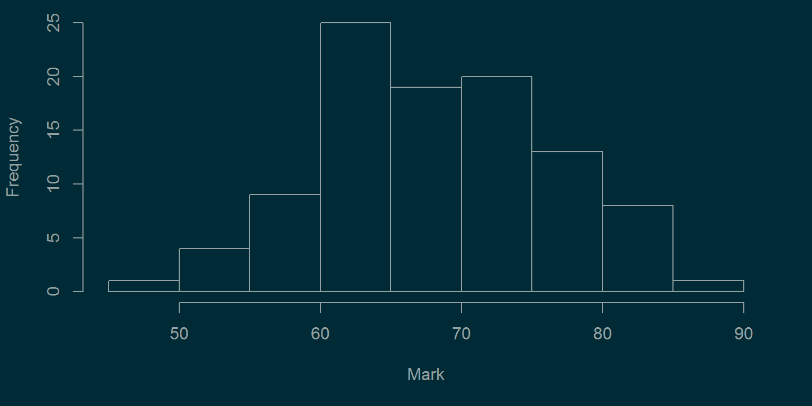
Histogram
- You can change the number of bins manually using the
breaks =argument
hist(data$mark, breaks = 20, main = "", xlab = "Mark")
Box plot
boxplot(data$mark, xlab = "Mark")Box plot
boxplot(data$mark, xlab = "Mark")
Visualising relationships
- We collect data because we think that things are related to each other
- Potential relationships can be gauged by plotting variables of interest on different axes
- Visualisations get trickier with more than 2-3 variables (blame our 3D space)
Two categorical variables
- Mosaic plots are useful for visualising proportions
# first x-axis, then y-axis
plot(data$dpt, data$eye_col,
xlab = "Department", ylab = "Eye colour")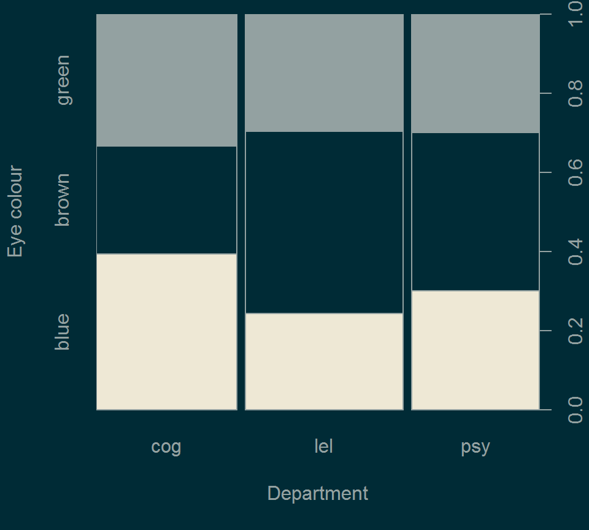
Two categorical variables
- Bar plots are also good (
beside = Tunstacks the bars)
# when using barplot() a contingency table must be provided
barplot(table(data$eye_col, data$dpt), beside = T,
xlab = "Department", ylab = "Count", legend.text = T)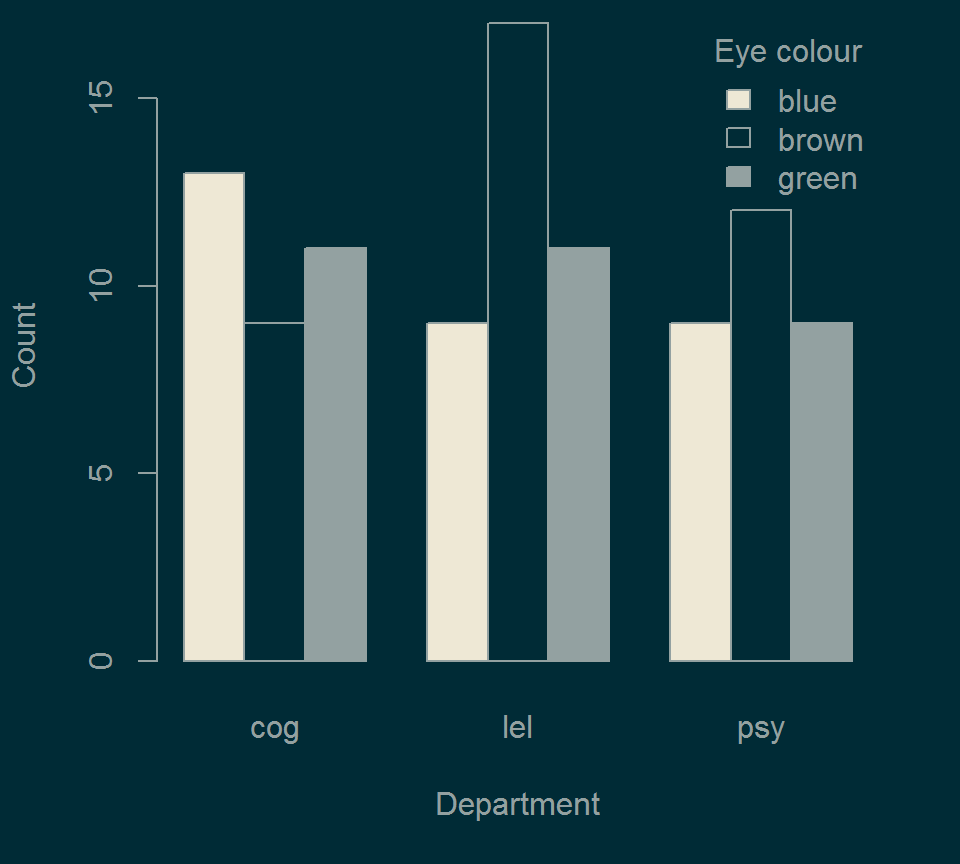
1 categorical, 1 continuous var
- Overlaid histograms are an option (base
Rcode is clunky)
# col = needs to be specified
hist(data$mark[data$dpt == "cog"], xlab = "Mark", main = "", col = ...)
hist(data$mark[data$dpt == "lel"], add = T, col = ...)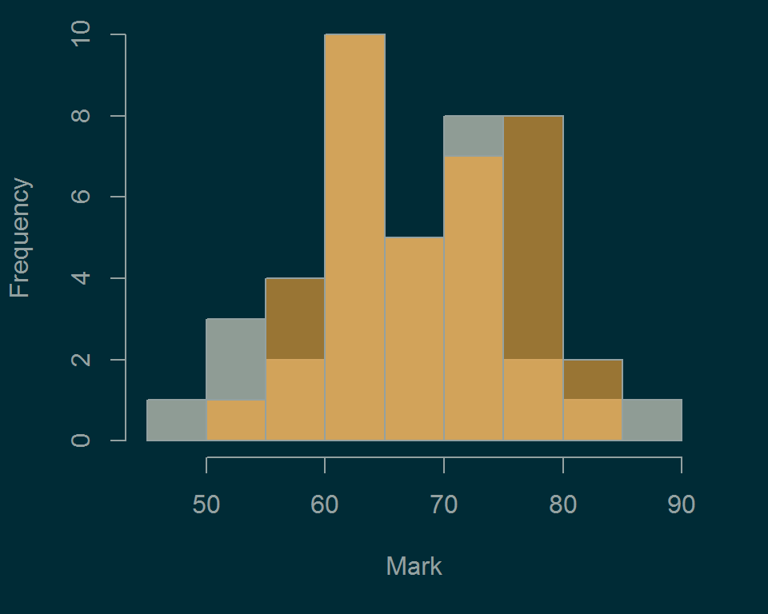
1 categorical, 1 continuous var
- Box plots provide more information and are less busy
plot(data$dpt, data$mark, xlab = "Department", ylab = "Mark")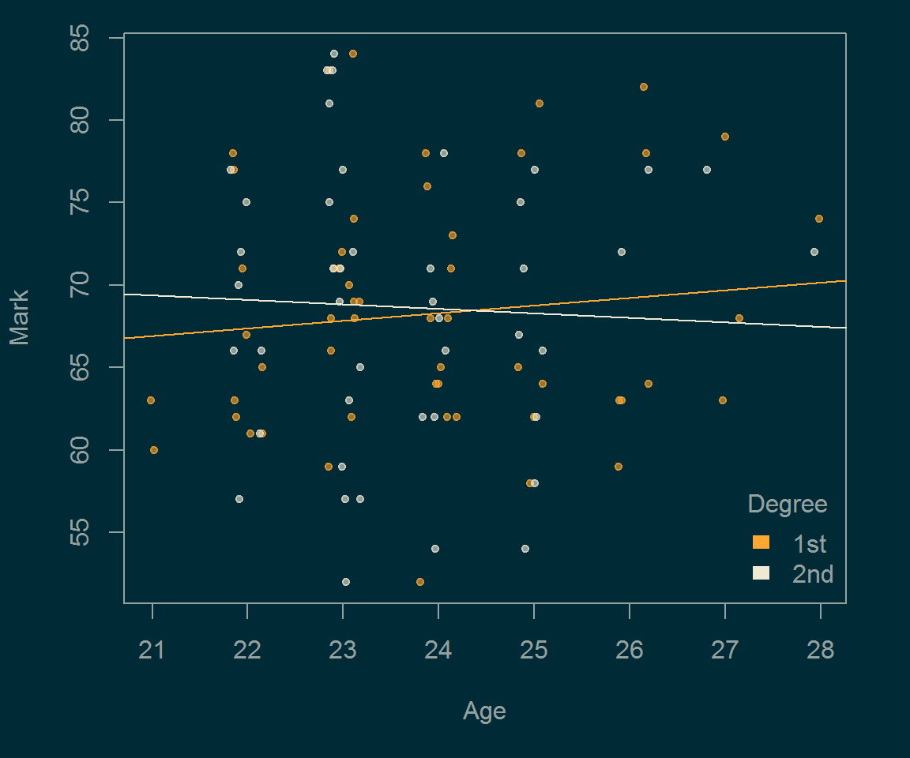
2 categorical, 1 continuous var
- Use colour for levels of 2nd variable (full code)
# pick 3 colours, legend and x axis require a bit of effort
boxplot(data$mark ~ data$eye_col + data$dpt, col = c(..., ..., ...),
xlab = "Department", ylab = "Mark")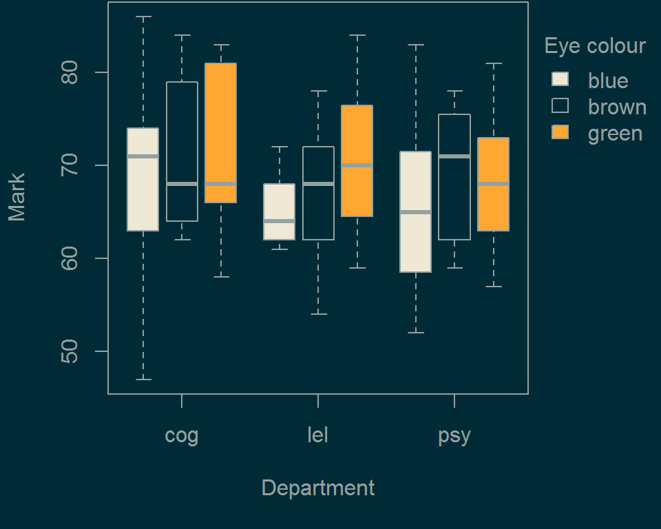
Two continuous variables
- Best way to visualise a relationship between 2 continuous variables is with a scatter plot
# jitter moves the points around a little, try without
plot(jitter(data$age), data$mark, xlab = "Age", ylab = "Mark", pch = 20)
abline(lm(mark ~ age, data)) # line of best fit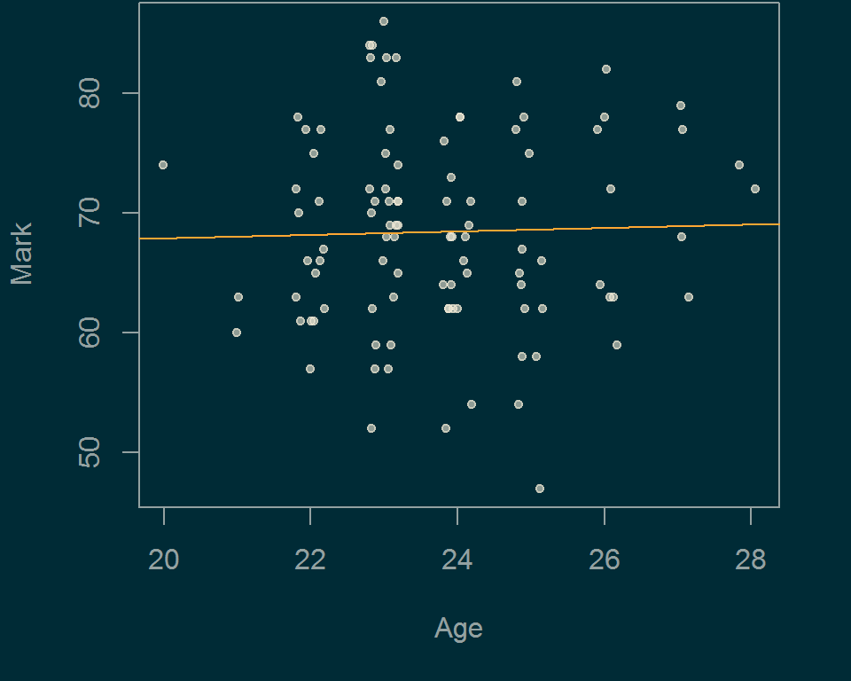
Scatter plot
- It is useful to learn to recognise types of relationships
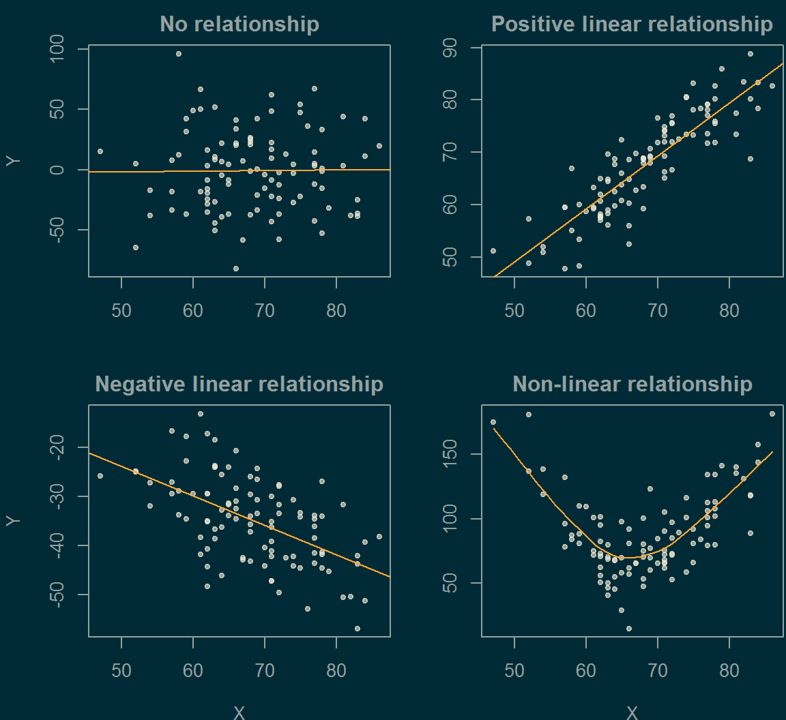
2 continuous, 1 categorical var
- Scatter plots can also be colour-coded (full code)

Take 10
The shape of things
Distribution
- Numerically speaking, the number of observations per each value of a variable
- Tells us which values occur more often and which less often
- Graphically speaking, it is the shape formed by the bars of a bar chart/histogram
- There are many well-described distributions with known properties, some crucial, others more esoteric
Rolling a die
- Let’s roll a fair die 1,000 times and record the results
result <- sample(x = 1:6, size = 1000, replace = T)
# Let's see the distribution of the result variable
table(result)
result
1 2 3 4 5 6
157 168 158 192 164 161
barplot(table(result))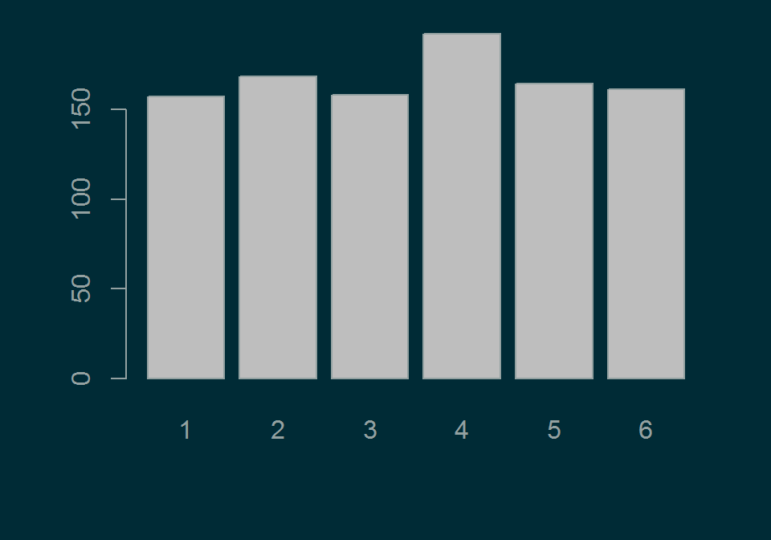
The uniform distribution
- Given that we had a fair 6-sided die, we know that the probability of any result is 1/6
- The height of all the bars should be the same – uniform distribution
- The observed bars are not all the same because of a reltively small finite sample and statistical fluctuations in sampling
Fluctuations
- In smaller samples, the fluctuations are more pronounced, in large samples, they become negligible
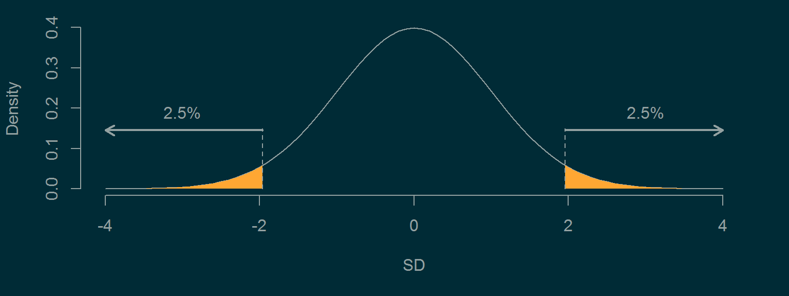
Fluctuations
- The above illustrates 2 important points:
- Empirical (observed) distribution will always differ form theoretical (expected) distribution
- As sample size gets bigger, the observed values will approach the expected values – Law of Large Numbers
Flipping coins
- Flip a fair coin 10 times and record number of heads
- Repeat this experiment 1,000 times
result <- factor(rbinom(n = 1000, size = 10, prob = .5), levels = 0:10)
table(result)
result
0 1 2 3 4 5 6 7 8 9 10
0 8 46 109 210 233 220 120 41 12 1
barplot(table(result))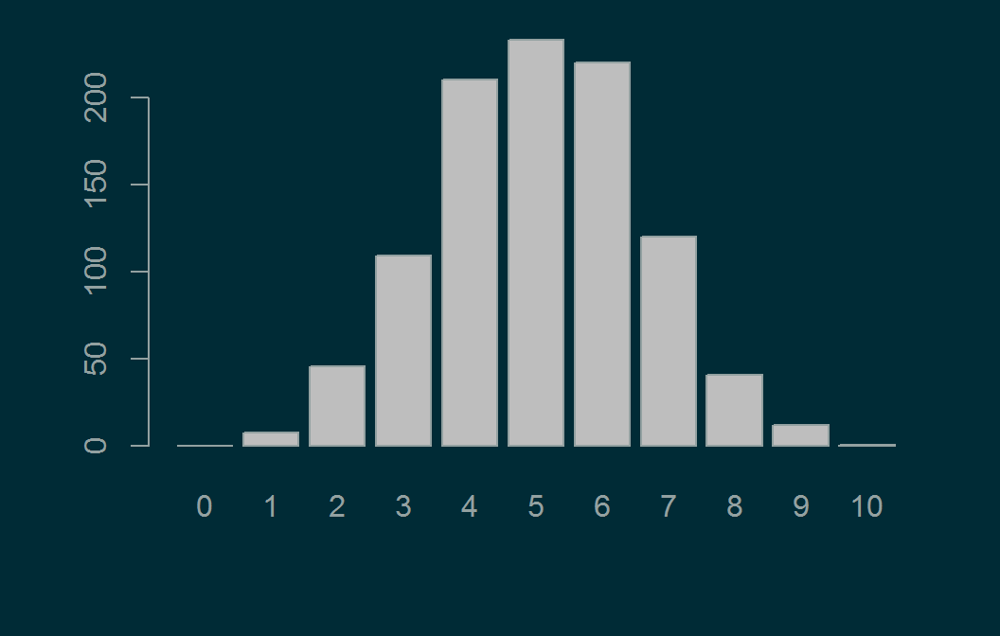
Binomial distribution
- The distribution of the number of successes (heads) given probability of success (.5) and number of trials (10) follows the binomial distribution
- Given the properties of the distribution are known, we know how many successes to expect given the required parameters
# probability of getting 4 heads
# out of 10 flips if P(heads) = .5
dbinom(x = 4, size = 10, prob = .5)
[1] 0.2050781Normal distribution
- Things caused by lots of factors with small effects follow a distribution that is unimodal, symmetrical, and bell-shaped, with bulk of the values in the middle
- In social sciences, many variables of interest are such things
- That is why this normal distribution is particularly important
Normal distribution
- The shape of the normal distribution is determined by its mean and standard deviation
x <- rnorm(n = 10^7, mean = 0, sd = 1) # go big or go home
hist(x, breaks = br, xlim = c(-4, 4), ylim = c(0, .4), freq = F)
Normal distribution
- The shape of the normal distribution is determined by its mean and standard deviation
x <- rnorm(n = 10^7, mean = 0, sd = 1) # go big or go home
hist(x, breaks = br, xlim = c(-4, 4), ylim = c(0, .4), freq = F)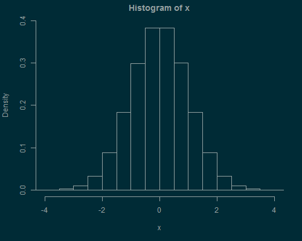
Normal distribution
- This is the normal (Gaussian) probability density function
- It takes some real numbers, some mean, and some SD and returns the probability with which values around these numbers will be observed*
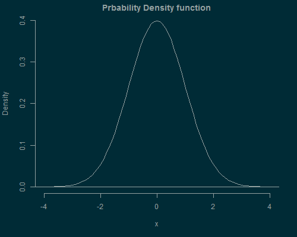
* Substantial caveats! For more info, see here
Normal distribution
- This is the normal (Gaussian) probability density function
- It takes some real numbers, some mean, and some SD and returns the probability with which values around these numbers will be observed*
- It is the scary formula from earlier:
# R has it too (of course!)
dnorm(1, 0, 1) # some number, mean, sd
[1] 0.2419707* Substantial caveats! For more info, see here
Normal distribution
- Not every symmetrical bell-shaped distribution is normal
- It’s also about the proportions – The proportion of observations that falls within a given interval is fixed
Normal distribution
- Peak/centre of the distribution is its mean (also mode and median)
- Changing mean (centering) shifts the curve left/right
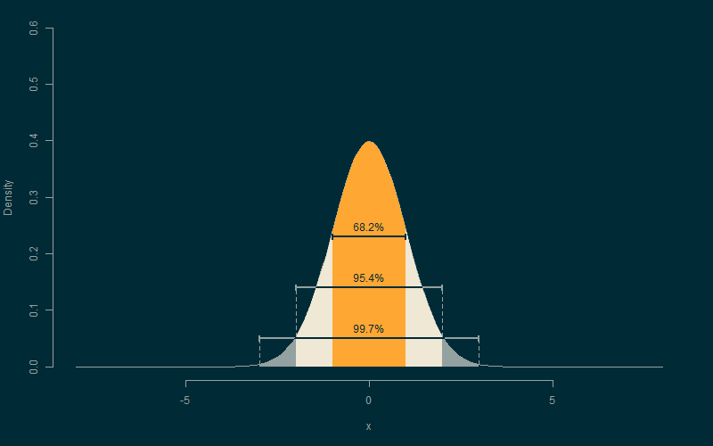
Normal distribution
- Peak/centre of the distribution is its mean (also mode and median)
- Changing mean (centering) shifts the curve left/right
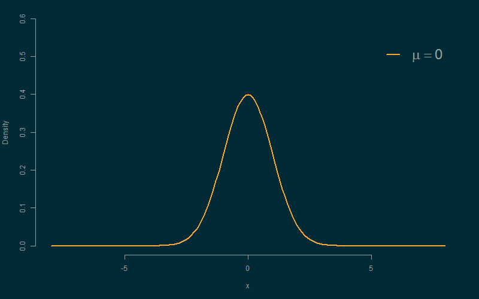
Normal distribution
- Peak/centre of the distribution is its mean (also mode and median)
- Changing mean (centering) shifts the curve left/right
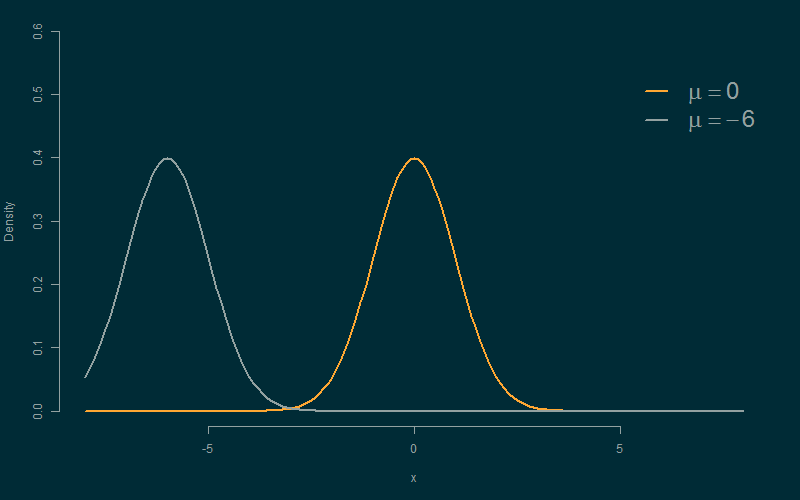
Normal distribution
- Standard deviation determines the steepness of the curve (small SD = steep curve)
- Changing SD is also known as scaling
Normal distribution
- Standard deviation determines the steepness of the curve (small SD = steep curve)
- Changing SD is also known as scaling
Normal distribution
- Standard deviation determines the steepness of the curve (small SD = steep curve)
- Changing SD is also known as scaling
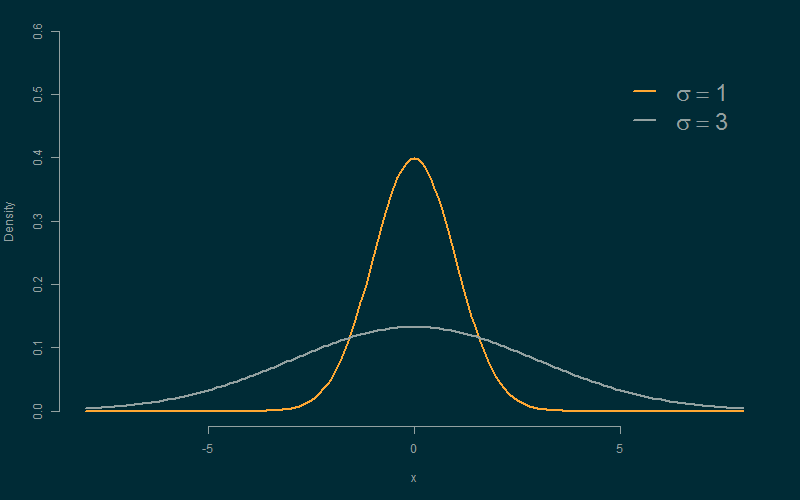
Area below the normal curve
- No matter the particular shape of the given normal distribution, the proportions with respect to SD are the same
- ∼68.2% of the are below the curve is within ±1 SD from the mean
- ∼95.4% of the are below the curve is within ±2 SD from the mean
- ∼99.7% of the are below the curve is within ±3 SD from the mean
- We can calculate the proportion of the area with respect to any two points
Area below the normal curve
- Say we want to know the number of SDs from the mean beyond which lie the outer 5% of the distribution
- Since the normal curve is symmetrical, we need to know the cut-off point for the bottom 2.5%

qnorm(p = .025, mean = 0, sd = 1)
[1] -1.959964Area below the normal curve
- Tails of the normal distribution past the ±1.96 SD from the mean account for 5% of the data
- That means that the probability of randomly drawing a value from the normal distribution that is smaller than or equal to −1.96 OR bigger than or equal to 1.96 SD from the mean is 5%
- Other useful cut-off points:
qnorm(p = .005, mean = 0, sd = 1, lower.tail = F) # 1% of data is +-
[1] 2.575829
qnorm(p = .0005, mean = 0, sd = 1, lower.tail = F) # .1% is +-
[1] 3.290527Standard normal distribution
- Normal distribution with mean = 0 and SD = 1 is the standard normal distribution
- Convenient – can substitute “±x SD from the mean” with “±x”, e.g.:
- 68.2% of the standard normal distribution has values between −1 and 1
- Most extreme 5% of the distribution lie outwith the ±1.96 cut-off point
Standard (z -) scores
- Variable can be standardised (AKA z-transformed) by subtracting its mean and dividing by its SD
mark_z <- with(data, (mark - mean(mark)) / sd(mark))
hist(mark_z, main = "")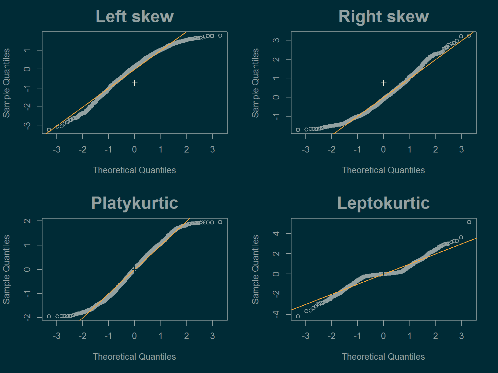
# the scale() function does the same
mark_z <- scale(data$mark)Other distributions
- There are many well-known distributions and distribution families specified by other parameters
- Similarly to the normal distribution, we can calculate the probability associated with a given portion of the area below their respective PDFs
- Important distributions we will encounter:
- Student’s t-distribution – for small samples and unknown population \(\sigma\)
\(\chi^2\) -distribution – [Chi-squared], sums of squares of random normal variables- F-distribution – ratio of two \(\chi^2\) variables
Departures from normality
Three ways to non-normality
- To recap, the normal distribution is:
- continuous unbounded
- unimodal – has only one “peak”
- symmetrical – given unimodality, this means that mode = median = mean
- specifically bell-shaped – characteristic proportions (68.2% between ±1 SD from the mean, etc)
- There are 3 ways in which the distribution of a continuous variable can depart from the normal distribution
- Multimodality
- Skew
- Kurtosis
Multimodality
- Easy to spot – does the distribution have more than one peak?
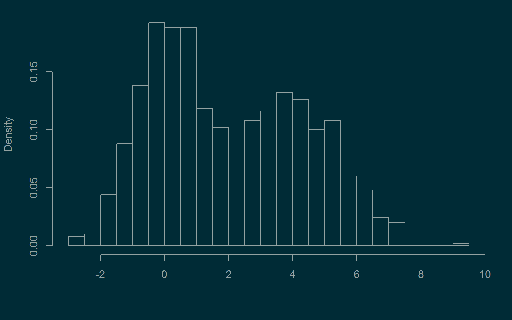
Skew
- Skewed distributions are not symmetrical
- That means that the statement mode = median = mean is not true
- Positive skew means that the distribution has a long tail towards larger numbers (AKA right skew)
- Negative (AKA left) skew means that the longer tail spreads towards smaller/negative numbers
- Normal distribution has zero skew
Skew
- All three distributions have mean = 0 and SD = 1
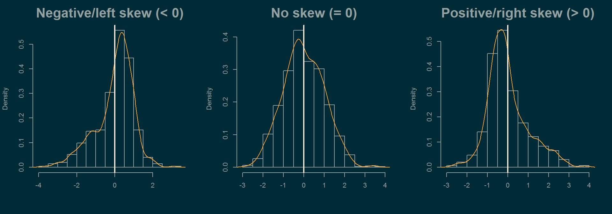
Kurtosis
- Measure of how flat or pointy a distribution is
- Kurtosis is independent of SD
- Normal distribution has kurtosis = 3
- Flat (AKA platykurtic or heavy-tailed) distributions have smaller kurtosis – their tails include more data than the tails of a normal distribution
- Pointy (AKA leptokurtic or thin-tailed) distributions have larger kurtosis – their tails include less data than the tails of a normal distribution
Kurtosis
- All three distributions have mean = 0 and SD = 1
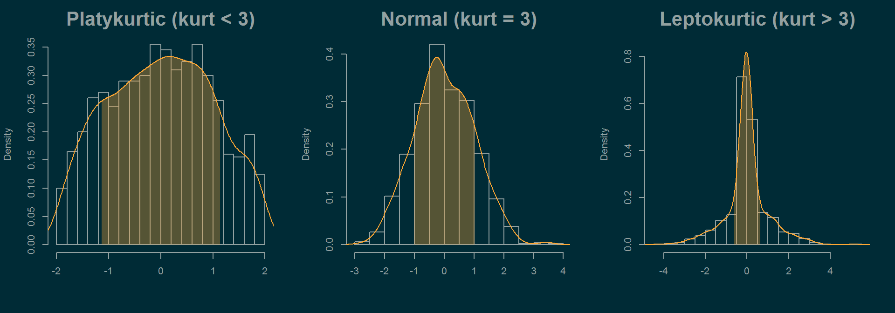
Kurtosis vs SD
- Normal distributions with small SDs may look pointy and those with large SDs may look flat but that does not mean that they don’t have normal kurtosis
- Kurtosis is about the relationships between SD and the proportion of the area below the PDF!
Q-Q plot
- Good way to visualise departures from normality is the quantile-quantile plot
qqnorm(x, main = "Normal")
qqline(x, col = "#ffa733")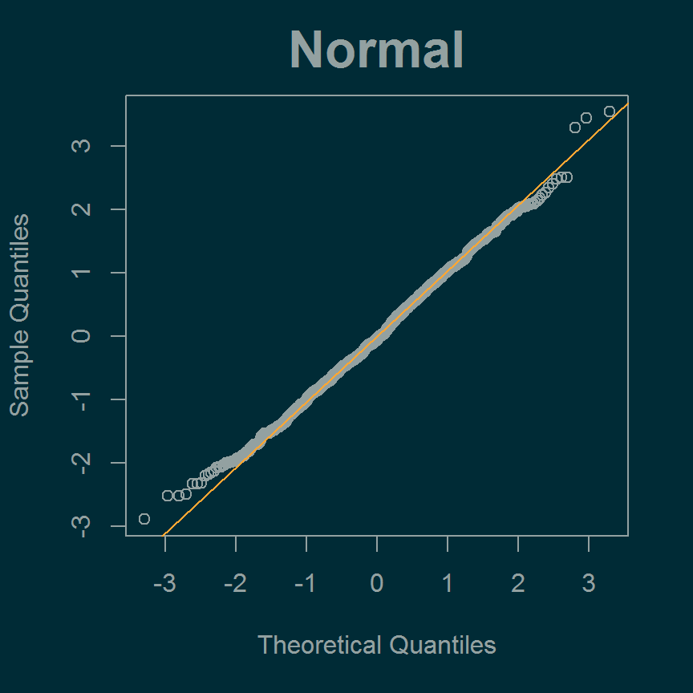
Q-Q plot

Going meta
Sampling from distributions
- Collecting data on some variable amounts to randomly* sampling from the distribution that underlies the variable
- Often, in the case of psychological variables caused by the interplay of many factors with small effects, the underlying distribution is assumed to be normal
- Other variables might come from other distributions
- Reaction times are often log-normally distributed
- Number of people who die from being kicked by a horse per year is Poisson-distributed
- Passes/fails on an exam are binomially distributed…
* Yeah… sure…
Sampling from distributions
- We can simulate data by sampling from well-defined distributions
Rgives us several functions for randomly drawing values
runif(n, min, max) # Random UNIForm
rbinom(n, size, prob) # Random BINOMial
rnorm(n, mean, sd) # Random NORMal
rt(n, df) # Random T
rf(), rbeta(), rchisq()... # you get the ideaSampling from distributions
- Because of statistical fluctuations, each time we draw from a single distribution, the individual samples will differ
- Same as taking two samples from a population
# draw a sample of 10 from a normally distributed
# population with mean 100 and sd 15
rnorm(n = 6, mean = 100, sd = 15)
[1] 110.33087 71.15032 128.25144 92.19676 102.31205 93.23293
# repeat
rnorm(6, 100, 15)
[1] 95.02736 114.60908 70.95406 77.30261 101.14122 96.30217Sample parameters
- Parameters (mean, SD, slope, etc.) of two samples will be different
- Sample parameter will likely differ from the population parameter
sample1 <- rnorm(50, 100, 15); sample2 <- rnorm(50, 100, 15)
mean(sample1); mean(sample2)
[1] 99.46963
[1] 98.85646
Sampling distribution
- If we took all possible samples of a given size (say N = 50) from the population and each time calculated the sample mean, the means would have their own distribution
- This is the sampling distribution of the mean
- Approximately normal
- Centered around the true population mean
- Every parameter has its own sampling distribution
Sampling distribution
samp_means <- replicate(100000, mean(rnorm(50, 100, 15)))
mean(samp_means)
[1] 99.99304
hist(samp_means, main = "", xlab = "Sample mean", breaks = 50);
abline(v = mean(samp_means), col = "#ffa733", lwd = 2)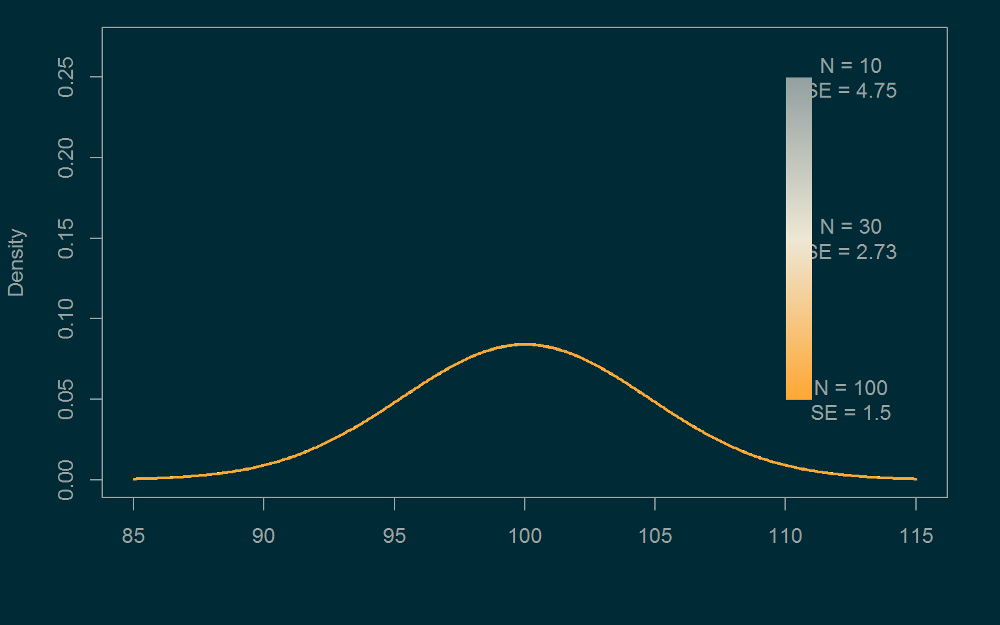
Standard error
- Standard deviation of the sampling distribution is the standard error
sd(samp_means)
[1] 2.123859- Since sampling distribution of the mean is approximately normal, we know that ~68.2% of means of samples of size 50 from a normally distributed population with a population mean of 100 and population standard deviation of 15 will be within ±2.12 of the true mean
Standard error
- Standard error can be estimated from any of the samples
\[SE = \frac{s}{\sqrt{N}}\]
samp <- rnorm(50, 100, 15)
sd(samp)/sqrt(length(samp))
[1] 1.684557
# underestimate compared to actual SE
sd(samp_means)
[1] 2.123859- If ~68.2% of sample means lie within ±1.68, then there’s a ~68.2% probability that the true mean will be within ±1.68 of the sample mean
mean(samp)
[1] 100.2396Standard error
- As the estimate of SE is calculated using N, there’s a relationship between the two
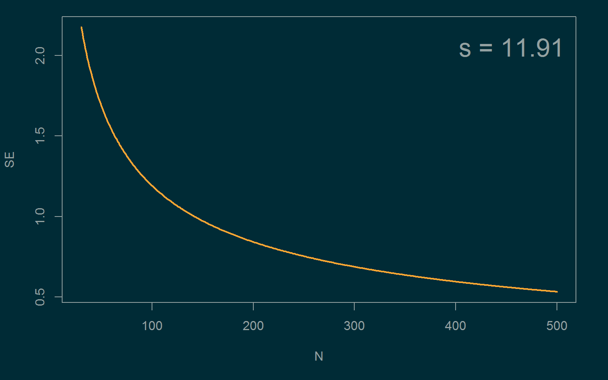
Standard error
- That is why larger samples are more accurate!
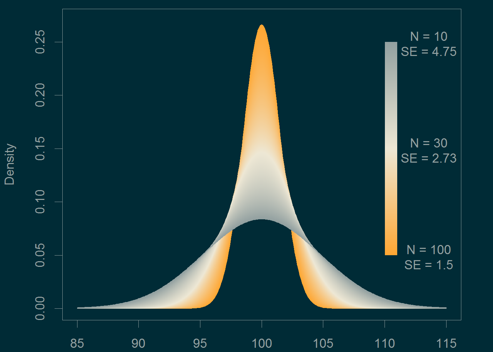
Standard Error
- Allows us to gauge the accuracy of our sample parameter estimate with respect to the true population parameter
- The smaller the SE, the more confident we can be that the parameter estimate (e.g., mean) we get in our sample is roughly equal to the population parameter
- After all, we don’t particularly care about our specific sample – we care about how things are in the population
CLT: No scrubs
Central Limit theorem
- We mentioned that the sampling distribution of the mean is approximately normal
- This is true even if the population from which we sample is not normally distributed
- This is the Central Limit Theorem
- “Central” as in “really important” because, well, it is!
CLT in action
CLT in action

Approximately normal
- As N gets larger, the sampling distribution of \(\bar{x}\) tends towards a normal distribution with mean = \(\mu\) and \(SD = \frac{\sigma}{\sqrt{N}}\)
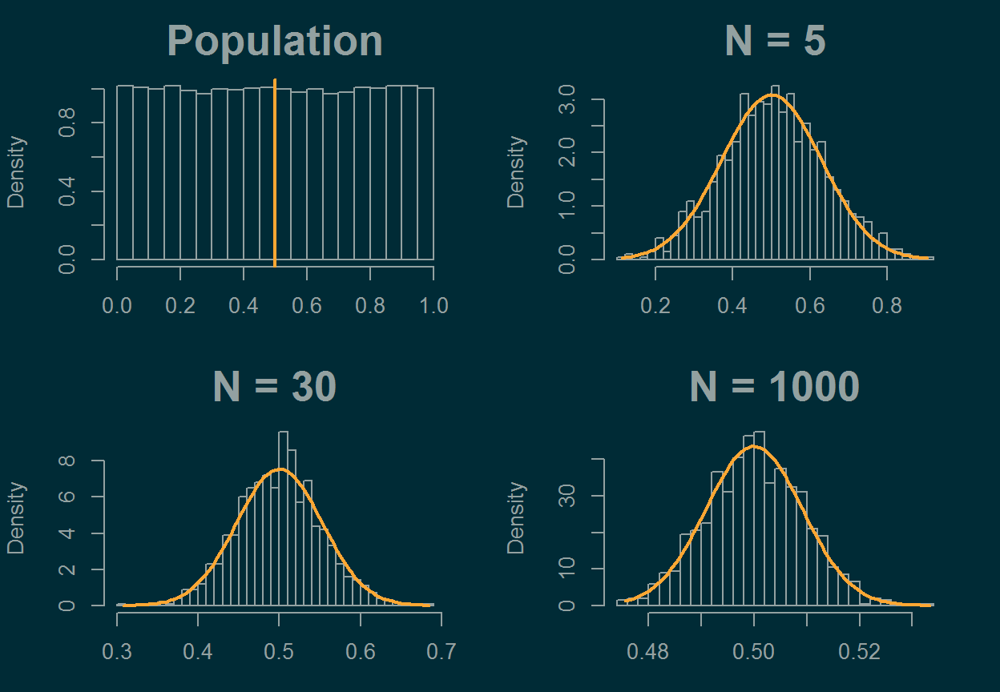
Take-home message
- Functions are sequences of operations that for every input produce at most one output
- Mathematical functions can be described by equations
- They are good for visualising maths operations
- Most important function to understand is the linear function (line) –
\(y = b_0 + b_1\times x\) \(b_0\) is the intercept\(b_1\) is the slope
Take-home message
- Distribution is the number of observations per each value of a variable
- There are many mathematically well-described distributions, e.g.:
- Student’s t
- Binomial
- Normal
- Each of these known distributions has a porbability density function
- Allows calculating the probability of drawing an arbitrary range of values
Take-home message
- Normal distribution is continuous, unimodal, symmetrical, and bell-shaped
- Common departures from normality
- Multimodality
- Skew (positive/negative)
- Kurtosis (lepto-/platykurtic)
Take-home message
- Parameters of random samples differ from parameters of a population
- As N gets bigger, sample parameter approaches population parameter
- Distribution of sample parameters is the sampling distribution
- SD of sampling distribution of the standard error of the parameter
- Provides margin of error for estimated parameter
- The larger the sample, the more precise the estimate
Take-home message
- Central Limit Theorem
- Really important!
- Sampling distribution of the mean tends to normal even if population distribution is not normal
- Understanding distributions, sampling distributions, standard errors, and CLT it most of what you need to understand all the stats techniques we will cover
- Cool graphs are cool…